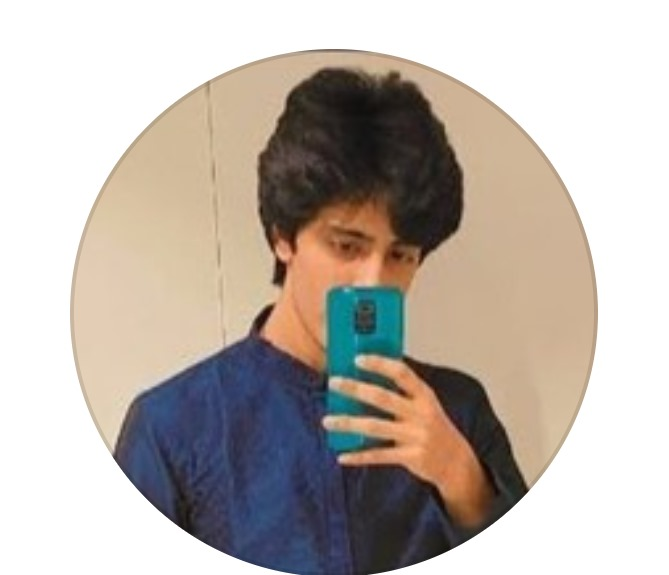

Chapter 1: Unexpected Beginnings
It was just a ordinary day, you know? The kind where the sun does its thing, and life moves at its own pace. But then, something changed, something as simple as hearing your name for the very first time.
Little did I realize, that seemingly ordinary day marked the start of a story. A story about a girl, inspired by a boy, ready to pen down her thoughts and feelings. It's like this website I'm about to write will be my way of letting you into my world, of sharing pieces of myself that I've never shared before.
So, 2 years back! It became the beginning of a journey, a journey of inspiration, discovery, and the hope that through these written words, you might just get to know a bit more about the girl who found something special in the simple mention of your name.
- Ordinary April Moments
- The Name that Echoed
- Whispers of Curiosity
- In Search of Color
Ordinary April Moments
She was just a regular girl, you know? Average in everything she did. Studying some random course in an average college. Nothing too flashy. She felt ordinary, just going through the motions of life.
Then there was him—totally different. Successful in everything, like he had some extra bit of extraordinary in him. But here's the thing: he didn't even know her. Well, that's no wonder. She was just an observer, quietly doing her thing.
Yet, in these simple, ordinary moments of April, something special started to happen. In her ordinary way, she found a kind of magic that changed her perspective. It was like even in her regular life, there was something quietly extraordinary.
The Name that Echoed
In the ordinary moments of April, she found herself sitting among friends, sharing stories just like they always did. It was in one of those casual exchanges that she first heard about him. A friend painted a picture of a guy who seemed to have it all—the best at everything he touched.
As the tales unfolded, his name, a simple four-letter arrangement, started to weave itself into the fabric of her thoughts. It was during those stories that something shifted inside her. His name wasn't just a name; it was accompanied by a narrative, a storyline that sparked a newfound curiosity within her.
Curled up in the cozy corners of her ordinary life, his name began to echo in her mind like a soft melody. Each repetition seemed to carry a hint of something more, something beyond the ordinary. Unbeknownst to her, in that unassuming name and the stories attached, the chapters of her life were quietly getting ready to unfold into something extraordinary. And so, in the echo of his name, the unexpected dance of their stories began.
Whispers of Curiosity
It all began with a soft whisper of curiosity. As the pages of her life turned, she found herself captivated by the enigma of him. Who was he? What made him tick?
The very first glimpse she caught was in the small rectangle of her phone screen. There he was, holding a phone, draped in a blue kurta, half-hidden, revealing only his eyes—an ocean of mystery. His hair, a fluffy cloud framing his face, added to the intrigue.
That moment sparked something inside her—a spark of curiosity that refused to be extinguished. It was as if a story unfolded in that solitary image, leaving her yearning for more. And so, her journey to unravel the layers of his existence began.

An ordinary teen
Trying to become extraordinary XD
In Search of Color
Driven by an insatiable curiosity, she embarked on a quest, reminiscent of the explorers of old seeking treasures across vast seas. In her modern-day odyssey, she navigated through his digital realms, chasing glimpses of his life. From one platform to another, she painted a picture of him—each post, each photo adding a stroke to the canvas of her imagination.
His virtual presence became a spectrum of colors, each hue revealing a facet of his personality. The search wasn't just about finding information; it was about discovering the vibrant palette of his existence. With every click, she inched closer to understanding the person behind the pixels, tracing the contours of a story waiting to unfold.
Back to the beginning of era